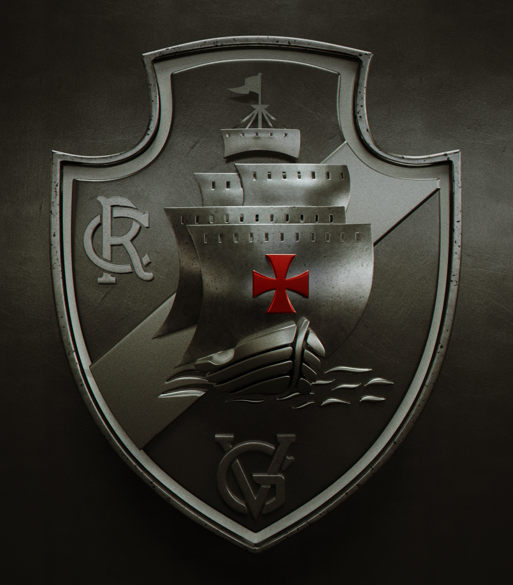
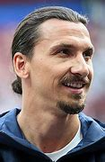

https://vasco.com.br/noticias/
Vasco
Vascaino: Douglas

Como um clube de remo em 1898, por um grupo de 63 rapazes, imigrantes portugueses
e luso-descendentes, reunidos no bairro da Saúde.[31] O nome escolhido foi Club de Regatas Vasco da
Gama, pois naquele ano eram comemorados os 400 anos da viagem do almirante homônimo à Índia.[31][32]
Já filiado à União de Regatas, a estreia do Vasco em competições oficiais ocorreu a 4 de junho de 1899,
na enseada de Botafogo. Ali, a baleeira "Volúvel", de seis remos, venceu o primeiro páreo na categoria
júnior, a primeira vitória do Vasco no remo.[33] Em 24 de novembro de 1905, o clube conquistou o
primeiro Campeonato Carioca de Remo, numa competição que contou com o presidente Rodrigues Alves
entre os assistentes. Já no ano seguinte, o Vasco sagrou-se bicampeão.[34] Até 2012, o clube venceu
o campeonato de remo um total de 46 vezes.[33]
Em novembro de 1915, o clube de futebol Lusitânia foi incorporado ao Vasco, dando origem ao
departamento de futebol do clube, apesar da oposição dos remadores vascaínos. O Vasco estreou a 3 de
maio de 1916, na terceira divisão, perdendo por 10 a 1 contra o Paladino Foot-Ball Club.[31]
1922–1934: Camisas Negras, Resposta Histórica e a luta contra o racismo
Ver artigo principal: Resposta Histórica
O clube incorporava aos seus quadros jogadores de qualquer origem étnica, com a condição que
soubessem jogar futebol.[31][32] Em 1922, o Vasco conseguiu o primeiro título ao ganhar a série B da
Primeira Divisão, o que lhe abriu a possibilidade de jogar na Primeira Divisão da Liga Metropolitana
de Desportos Terrestres (LMDT).[35] A campanha do clube consistiu em onze vitórias, dois empates e
uma derrota. O time vascaíno era composto por jogadores de várias origens, como negros, mulatos,
portugueses e brancos pobres da classe operária.[31] Apesar de haver outros times com jogadores destas
características (por exemplo o Bangu), essa era a primeira vez que os times mais elitistas da cidade
enfrentavam um time da periferia equivalente.[31]
O Vasco venceu o América e o Fluminense, conquistando o campeonato, em seu ano de estreia na primeira
divisão, no dia 12 de agosto de 1923, deixando o Clube de Regatas Flamengo, na segunda colocação, o que acabou marcando significativamente a história do clube, do Rio de Janeiro e do Brasil, por ser o primeiro do Clube em uma campanha com integrantes afrodescendentes, pobres e operários a ser campeão. Rui Proença, português de nascimento e radicado no Rio, identifica o fato como uma verdadeira revolução, enfatizando os preconceitos e dificuldades inicialmente encontrados pelo Vasco, associando-se ao fato de o Flamengo, o Fluminense e o Botafogo não permitirem a entrada de negros em seus clubes. O autor conclui que o clube representaria o congraçamento entre negros e portugueses, grupos discriminados que, unidos, fizeram o Vasco.[36] Em 2023, a Câmara dos Deputados aprovou projeto que incluiu os Camisas Negras, nome pelo qual ficou conhecido o elenco desta equipe cruzmaltina, no Livro de Heróis da Pátria.[37][38]
Após a tentativas de impedir o Vasco da Gama de entrar na competição em 1923, os clubes da zona sul (área de elite da cidade do Rio de Janeiro), Botafogo, Flamengo, Fluminense e alguns outros se uniram, abandonaram a Liga Metropolitana de Desportos Terrestres (LMDT) e fundaram a Associação Metropolitana de Esportes Atléticos (AMEA), deixando de fora o Vasco, que só poderia se filiar à nova entidade caso dispensasse doze de seus atletas (todos negros) sob a acusação de que teriam "profissão duvidosa". Diante da situação imposta, em 1924, o presidente do Club de Regatas Vasco da Gama, José Augusto Prestes, enviou uma carta à AMEA, que veio a ser conhecida como a "Resposta Histórica", recusando-se a se submeter à condição imposta e desistindo de filiar-se à AMEA. A carta entrou para a história como marco da luta contra o racismo no futebol.[39]
Desta forma, em 1924, foram disputados dois campeonatos em paralelo, sendo o da LMDT vencido de forma invicta pelo Vasco, conquistando assim o bicampeonato estadual. No ano seguinte, o clube venceu as resistências da AMEA, conseguiu integrar-se à entidade e voltou a disputar o campeonato contra os grandes times sob a condição de disputar seus jogos no campo do Andarahy. Apesar disso, o Vasco decidiu construir o seu próprio estádio, para acabar com qualquer exigência. O local escolhido para a construção foi a chácara de São Januário, que fora um presente de Dom Pedro I à Marquesa de Santos. Em 21 de abril de 1927, o Vasco da Gama inaugurava o Estádio de São Januário e até 1930, quando da inauguração do Estádio Centenário em Montevidéu (para a primeira Copa do Mundo), era o maior das Américas. Até 1940, quando da inauguração do Pacaembu em São Paulo, o estádio era o maior do Brasil, e até 1950, na inauguração do Maracanã, era o maior do Rio de Janeiro. O estádio foi construído em dez meses e com dinheiro arrecadado através da 'Campanha dos dez mil' que recebia donativos de torcedores de toda a cidade.[40] Dois anos depois seria inaugurada a sua iluminação, passando a ser o único clube do país com um estádio em condições de sediar jogos noturnos.[41]
Em 1929, além do Torneio Início, o Vasco ganhou seu terceiro Campeonato Carioca de Futebol em 7 anos de elite. Em 1931, o Vasco se tornou o segundo clube brasDesta forma, em 1924, foram disputados dois campeonatos em paralelo, sendo o da LMDT vencido de forma invicta pelo Vasco, conquistando assim o bicampeonato estadual. No ano seguinte, o clube venceu as resistências da AMEA, conseguiu integrar-se à entidade e voltou a disputar o campeonato contra os grandes times sob a condição de disputar seus jogos no campo do Andarahy. Apesar disso, o Vasco decidiu construir o seu próprio estádio, para acabar com qualquer exigência. O local escolhido para a construção foi a chácara de São Januário, que fora um presente de Dom Pedro I à Marquesa de Santos. Em 21 de abril de 1927, o Vasco da Gama inaugurava o Estádio de São Januário e até 1930, quando da inauguração do Estádio Centenário em Montevidéu (para a primeira Copa do Mundo), era o maior das Américas. Até 1940, quando da inauguração do Pacaembu em São Paulo, o estádio era o maior do Brasil, e até 1950, na inauguração do Maracanã, era o maior do Rio de Janeiro. O estádio foi construído em dez meses e com dinheiro arrecadado através da 'Campanha dos dez mil' que recebia donativos de torcedores de toda a cidade.[40] Dois anos depois seria inaugurada a sua iluminação, passando a ser o único clube do país com um estádio em condições de sediar jogos noturnos.[41]
Em 1929, além do Torneio Início, o Vasco ganhou seu terceiro Campeonato Carioca de Futebol em 7 anos de elite. Em 1931, o Vasco se tornou o segundo clube brasileiro a ser convidado para uma excursão internacional, depois do Paulistano. Neste mesmo ano, o Vasco aplicou uma goleada histórica de 7 a 0 no seu arquirrival Flamengo, sendo esta, a maior goleada entre as duas equipes em todos os tempos.[42]
Em 1934, contando com jogadores como Leônidas da Silva, Domingos da Guia, Russinho, Fausto e outros, o Gigante da Colina conquistou o Campeonato Carioca, sendo que naquele ano o campeonato foi disputado em duas ligas. O Vasco, assim, ganhou o direito de disputar a Taça dos Campeões Estaduais, que era a disputa interestadual envolvendo os campeões do Rio de Janeiro e São Paulo, empatando na final com o Palestra Itália. Ainda neste ano, o Vasco ingressou na Confederação Brasileira de Desportos após esta aceitar o regime profissional e ainda em 1934 o Vasco da Gama seria campeão estadual de remo, tendo adquirido o título de Campeão de Terra e Mar de 1934.[43]ileiro a ser convidado para uma excursão internacional, depois do Paulistano. Neste mesmo ano, o Vasco aplicou uma goleada histórica de 7 a 0 no seu arquirrival Flamengo, sendo esta, a maior goleada entre as duas equipes em todos os tempos.[42]
Em 1934, contando com jogadores como Leônidas da Silva, Domingos da Guia, Russinho, Fausto e outros, o Gigante da Colina conquistou o Campeonato Carioca, sendo que naquele ano o campeonato foi disputado em duas ligas. O Vasco, assim, ganhou o direito de disputar a Taça dos Campeões Estaduais, que era a disputa interestadual envolvendo os campeões do Rio de Janeiro e São Paulo, empatando na final com o Palestra Itália. Ainda neste ano, o Vasco ingressou na Confederação Brasileira de Desportos após esta aceitar o regime profissional e ainda em 1934 o Vasco da Gama seria campeão estadual de remo, tendo adquirido o título de Campeão de Terra e Mar de 1934.[43]
Após a conquista do Torneio Luís Aranha, em 1940, e novamente de um Torneio Início, em 1942, veio a formação de um elenco conhecido como o "Expresso da Vitória", liderado pelo atacante Ademir de Menezes.[44][45] Em 1944 venceu o Torneio Relâmpago, superando os outros quatro grandes da época (Flamengo, Fluminense, Botafogo e América) e aplicando uma goleada de 5 a 2 na última rodada sobre seu futuro rival, o Flamengo. Em seguida, ganhou o Torneio Municipal, contra os mesmo clubes e outros do Rio de Janeiro, empatando com o Flamengo na última rodada e se sagrando campeão. Voltando a vencer este mesmo Torneio nos três anos seguintes, se tornando o único tetracampeão da competição carioca, vencendo ainda outros dois títulos cariocas invictos, em 1945 e 1947. Este último rendeu ao clube o convite para disputar o Campeonato Sul-Americano de Campeões, competição precursora da Copa Libertadores da América e reconhecida pela CONMEBOL[46] como de igual valor em 1996/1997[47][48][49][50][51] e 2013.[52] Após a conquista continental em Santiago do Chile, no dia 18 de março de 1948, mais de 200 mil pessoas, cerca de 10% de toda a população do Rio de Janeiro à época, tomaram as ruas da cidade para recepcionar entusiasticamente a chegada dos "Campeões dos Campeões do continente".[53]
Em função do seu título carioca de 1950, o Vasco se qualificou a participar da Copa Rio de 1951, competição recentemente reconhecida pela FIFA como a primeira competição de clubes em nível mundial, com a participação de clubes europeus e sul-americanos. O Vasco chegou às semifinais, sendo eliminado pelo Palmeiras na semifinal (que se sagraria campeão da competição), tendo um gol vascaíno (Chico) sido incorretamente anulado pela arbitragem naquela semifinal.[45] Em 1954, o Vasco foi agraciado com a comenda da Ordem Militar de Cristo de Portugal, por "serviço relevante prestado ao país". A condecoração foi entregue por Paulo Cunha, na época Ministro dos Negócios Estrangeiros de Portugal, representando o General Craveiro Lopes, então presidente português.[54]
1957–1969: Domínio mundial
Em 14 de junho de 1957, a equipe de São Januário venceu o Real Madrid de Di Stéfano, Kopa, Paco Gento entre outros, por 4 a 3 na final e levantou a taça da primeira edição do Torneio de Paris (França), com uma apresentação perante o público de mais de 65 mil presentes no estádio Parc des Princes, rendendo elogios do mesmo e da imprensa francesa.[23][25][55] O jornal francês France Soir chegou a afirmar: "O Real Madrid não é o maior time do mundo. Sobre isso, falem com o Vasco da Gama".[56] Esta edição do Torneio de Paris é considerada como título mundial extraoficial, por ter sido a primeira competição da história e única pré-1960 a reunir, aos moldes da futura Copa Intercontinental, os campeões continentais da Europa e da América, apontadas como as melhores equipes do mundo à época.[57][58][59]
Ainda em 1957, o Vasco ganharia do FC Barcelona por 7 a 2, no Les Corts, antiga casa do clube espanhol antes do Camp Nou.[60][61] Esta é, ainda hoje, uma das piores derrotas sofridas pelo Barcelona como mandante em todos os tempos. As vitórias vascaínas sobre os gigantes espanhóis da época, Real Madrid e Barcelona, fizeram com que a imprensa espanhola questionasse a qualidade do seu próprio futebol. Descrevendo a excursão cruzmaltina pela Europa, o Jornal dos Sports escreveu em manchete: "como um tufão, o Vasco varre o football mundial".[62] Em 1966 o Torneio Rio-São Paulo, terminou empatado entre Vasco, Botafogo, Santos e Corinthians e o título foi dividido entre os quatro.[63] Os anos 1960 marcaram uma profunda crise política no clube, que culminou em 1969, com a cassação do então presidente do Vasco.[64]
1974–1989: Primeiros títulos nacionais
A década de 70 foi marcada pelo surgimento de Roberto Dinamite e pelo goleiro argentino Andrada. O Vasco conquistou o Campeonato Carioca, sendo que campeão do Brasileiro de 1974, com Roberto Dinamite sagrando-se artilheiro e o Vasco da Gama sendo o primeiro time do Rio de Janeiro a conquistar tal competição.[45]
Na década surgiram alguns ídolos vascaínos como Acácio, Mazinho, Geovani (o Pequeno Príncipe), Bismarck e Romário. Durante a década de 1980 o Vasco conquistou treze torneios Nacionais e Internacionais (dentre eles, o Troféu Colombino de Huelva na Espanha em 1980, o Torneio João Havelange em 1981, a Copa Ouro nos Estados Unidos em 1987 e o Tricampeonato do Troféu Ramón de Carranza em 1987, 1988 e 1989, vencendo o Atlético Madrid, Cádiz da Espanha e Nacional do Uruguai nestes últimos), três títulos estaduais (1982, 1987 e 1988) e o bicampeonato Brasileiro em 1989, após montar um time que ficou conhecido como SeleVasco, com destaque para o atacante Bebeto, contratado do arquirrival Flamengo.[65] Na política, a década de 1980 ficou marcada pela pacificação do clube, no momento em que o então presidente, Antônio Soares Calçada, convidou seu opositor, Eurico Miranda, para ser o diretor de futebol do Vasco a partir de 1986. Eurico viria a se tornar, nos próximos anos, um dos dirigentes mais conhecidos da história do Vasco da Gama, sendo figura atuante em todos os títulos conquistados posteriormente.[66]
1992–2007: Centenário e conquista da Copa Libertadores
A década de 1990 no Vasco ficou marcada pela despedida dos campos do ídolo Roberto Dinamite em 1993, e a ascensão de novos ídolos como Edmundo (o Animal), Felipe, Pedrinho, Carlos Germano, Pimentel, Valdir Bigode e Juninho Pernambucano. Em 1992, o clube ganhava seu primeiro título que marcaria o início da conquista dos cariocas de 1992, 1993 e 1994 ganhando o seu primeiro tricampeonato Estadual, para depois conquistar o Campeonato Estadual em 1998. Ainda em 1997, que foi um ano com destaque de Edmundo, o Vasco conquistou o tricampeonato Brasileiro.[67] A 18 de Agosto de 1997 foi feito Membro-Honorário da Ordem do Mérito de Portugal.
